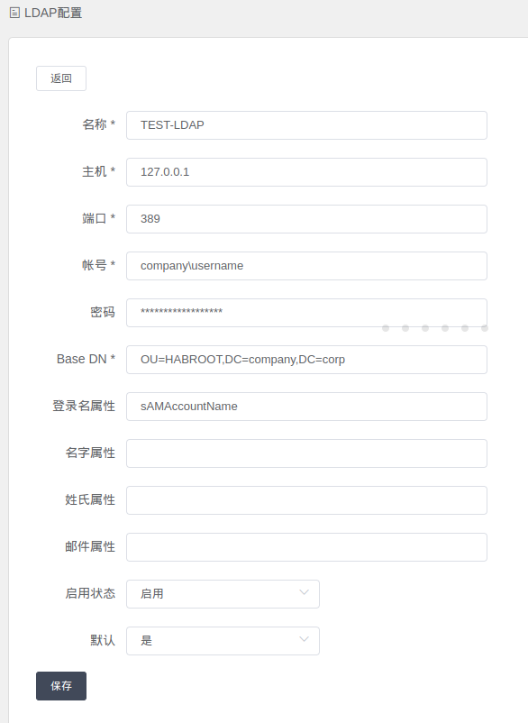

3.7.1 系统配置
站点地址配置
会在发送邮件时使用，单击测试时，应该设置为http://localhost:8080 ，具体根据部署的域名进行设置即可
LDAP配置

登录名属性为非必填项, LDAP配置后统一使用前缀登录，暂不支持UserPrincipalName,如 user1@test.com 使用 user1 作为用户名登录
登录名属性(AD用户属性)：UserPrincipalName与SamAccountName
- UserPrincipalName：
用户登录名格式：xiaowen@azureyun.com 是基于Internet标准RFC 822的用户Internet样式登录名; 在目录林中的所有安全主体对象中应该是唯一的; UPN是可选的，在创建用户帐户时可指定也可不单独指定；
- SamAccountName：
与早期版本的Windows（pre-windows 2000）一起使用; 用户登录名格式：azureyun\xiaowen 不能超过20个字符； 在域中的所有安全主体对象中是唯一的；
参考:AD用户属性：UserPrincipalName与SamAccountName的差别
配置测试
如下图，点击测试按钮：